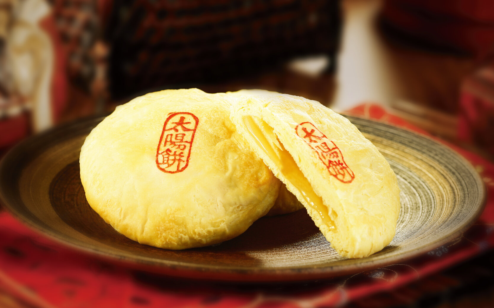

Top three things to do in Taichung
Attending Museums
National Taiwan Museum of Fine Arts, National Museum of Natural Science, and Taichung Literature Museum are places to discover the face of Taichung in a deeper understanding.


Explore the diversity of food
From local delicacies such as sun cake, bubble tea, and Dajia taro, to food from around the world can be found in the center of Taiwan.
Enrich the soul and body in the forest
Visiting Basianshan Natural Forest and Ku Kuan Hot Spring Park is a great combo to leave noise and tiredness behind, and live in present.
Let's keep in contact